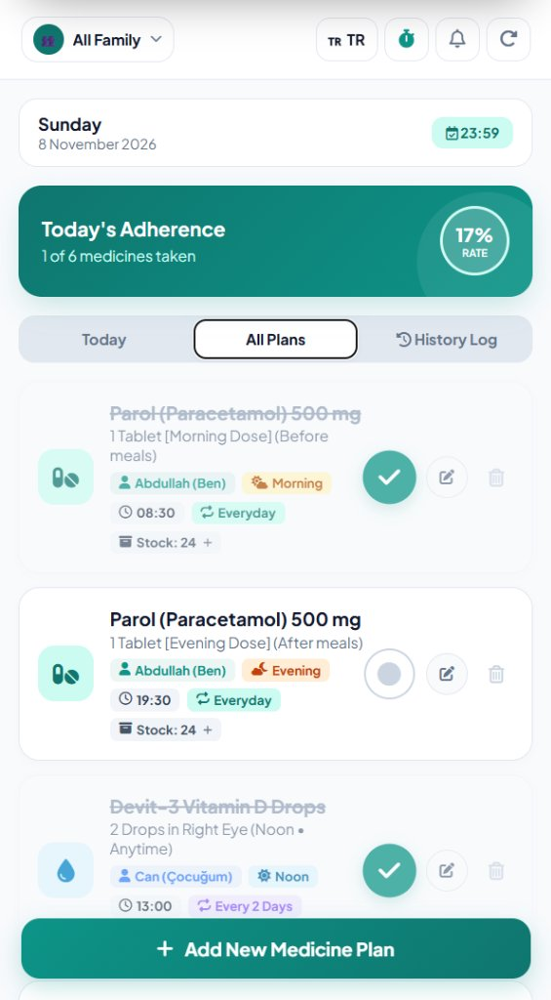
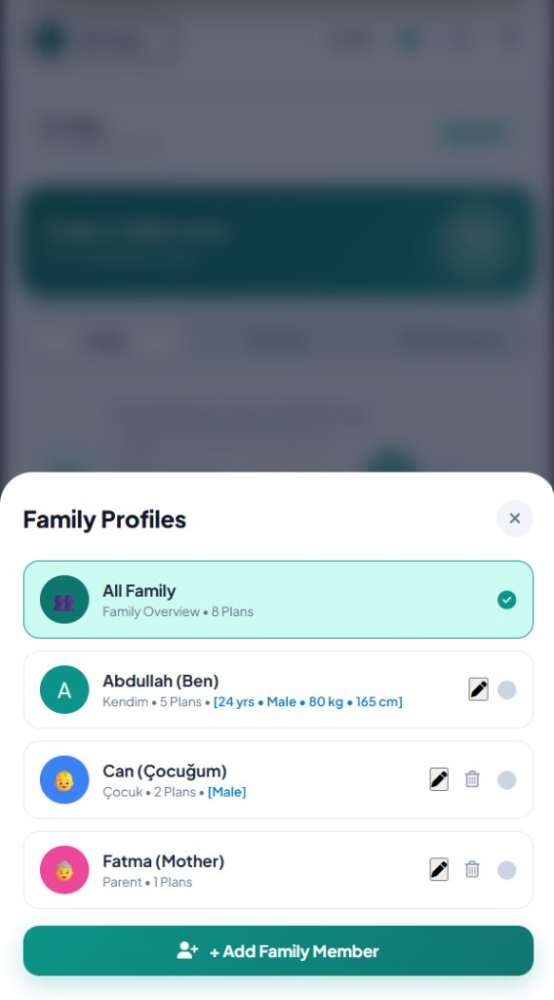
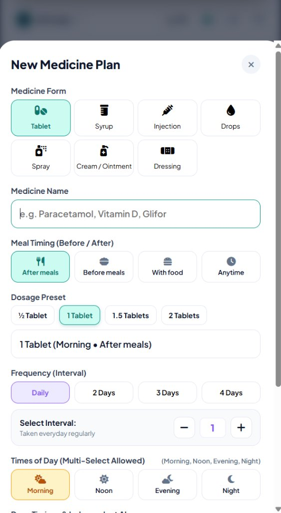
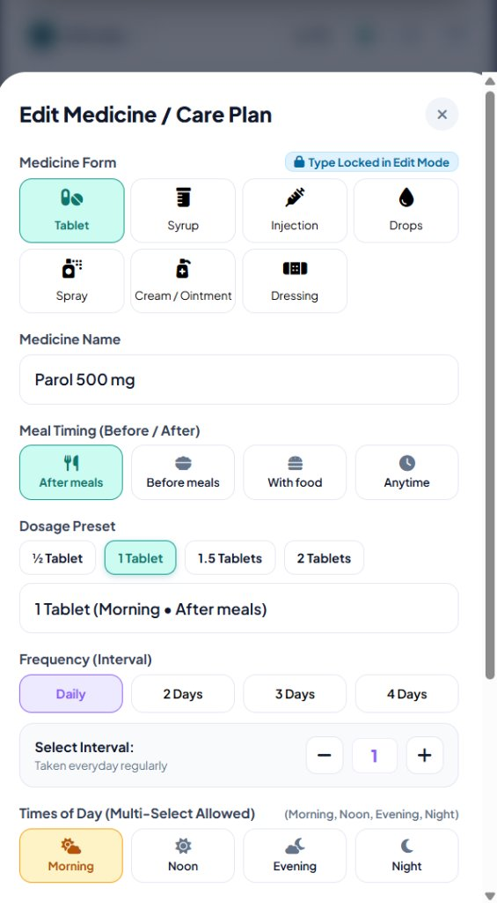
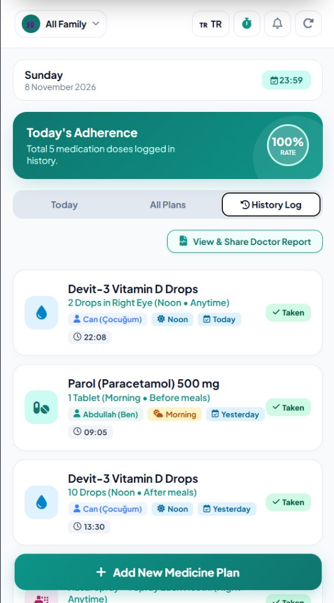
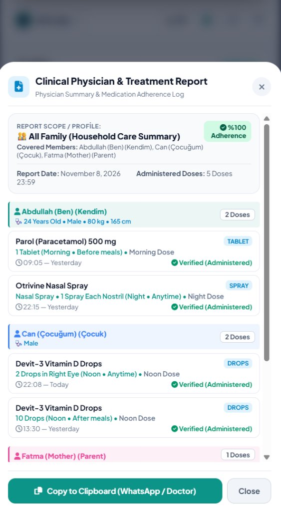

Traditional medication reminder applications often suffer from a fundamental oversimplification: they treat every medication as an isolated alarm that sounds at the same hour every day. However, clinical pharmacology and real-world patient workflows reveal four critical challenges:
freq = 1), alarms must automatically re-arm every single day. The system must automatically detect the change of date at midnight or upon morning launch and reset the active cycle state (isTaken = 0) without requiring manual re-entry.To address these clinical realities, Medicine Reminder was engineered as an end-to-end, safety-oriented personal health and therapy assistant. It integrates a 7-formulation clinical engine (Tablets, Syrups, Injections, Drops, Sprays, Topical Creams, and Wound Dressings), an Early Dose Guardrail that prevents premature drug administration, card-level in-place plan editing, a user-configurable interval scheduling algorithm, a bidirectional double-table SQLite medication history journal, context-aware meal timing, multi-profile family caregiver segregation, real-time inventory tracking, and full bilingual internationalization (English & Turkish).
sqflite): Embedded relational database engine supporting atomic transactions, foreign keys, and indexed queries.flutter_local_notifications + timezone): Background operating system alarms that trigger sound and vibration even when the app is terminated.The persistence layer utilizes two relational tables in SQLite to separate scheduled therapy plans from historical audit logs.
pills (Active Medication Plans)| Column | Type | Constraint | Engineering Purpose |
|---|---|---|---|
id |
INTEGER | PRIMARY KEY AUTOINCREMENT | Unique identifier used for alarm notification IDs |
profileId |
TEXT | DEFAULT 'p1' | Caregiver family profile assignment (p1, p2, p3) |
name |
TEXT | NOT NULL | Generic or brand name of the pharmaceutical |
type |
TEXT | DEFAULT 'tablet' | Formulation: tablet, syrup, injection, drops, spray, cream, dressing |
dosage |
TEXT | NOT NULL | Complete dosage and administration route |
time |
TEXT | NOT NULL | Scheduled reminder time in 24-hour format (HH:mm) |
timeOfDay |
TEXT | DEFAULT 'morning' | Circadian interval (morning, noon, evening, night) |
freq |
INTEGER | DEFAULT 1 | Interval period in days (1: Daily, 2: Every 2 days, X: Every X days) |
stock |
INTEGER | DEFAULT 30 | Remaining physical inventory; decrements on confirmation |
groupId |
TEXT | NULLABLE | Unique group identifier linking multi-dose entries (e.g. Morning & Evening doses of same drug) for shared inventory tracking |
lastTakenDate |
TEXT | NULLABLE | ISO-8601 date string (YYYY-MM-DD) of the most recent confirmed dose, enabling next-day automatic reset |
nextDueDate |
TEXT | NOT NULL | Target calendar date in ISO-8601 (YYYY-MM-DD) |
isTaken |
INTEGER | DEFAULT 0 | Status for the current active cycle (0: Pending, 1: Taken) |
history_logs (Immutable Medication Logbook)| Column | Type | Constraint | Engineering Purpose |
|---|---|---|---|
id |
INTEGER | PRIMARY KEY AUTOINCREMENT | Unique log entry identifier |
pillId |
INTEGER | FOREIGN KEY (pills.id) |
Relational link to the prescribed medication |
profileId |
TEXT | DEFAULT 'p1' | Profile identifier for filtering historical family records |
name |
TEXT | NOT NULL | Preserved medication name at time of administration |
dosage |
TEXT | NOT NULL | Exact dosage taken |
time |
TEXT | NOT NULL | System timestamp when user tapped the confirmation button |
timeOfDay |
TEXT | DEFAULT 'morning' | Circadian interval marker |
dateYMD |
TEXT | NOT NULL | ISO date stamp (YYYY-MM-DD) |
dateLabel |
TEXT | NOT NULL | Human-readable relative date (Today, Yesterday, 2 Days Ago) |
The figures below provide full-resolution, authentic production captures directly from the latest system deployment. Each view highlights critical clinical workflows—including consolidated household adherence tracking, multi-profile caregiver management with clinical demographics, comprehensive treatment creation, safety guardrails during regimen modification, immutable chronological administration logs, and physician consultation summaries:






When multiple daily doses are scheduled for a single medication (e.g. Parol Morning at 08:30 and Evening at 19:30), they are assigned a shared groupId. Taking any dose synchronizes physical stock depletion across all linked records in the group while advancing the individual dose's history log:
// lib/services/db_helper.dart
Future<void> markPillAsTaken(Pill pill) async {
final db = await database;
final now = DateTime.now();
final timeStr = "${now.hour.toString().padLeft(2, '0')}:${now.minute.toString().padLeft(2, '0')}";
final dateYMD = "${now.year}-${now.month.toString().padLeft(2, '0')}-${now.day.toString().padLeft(2, '0')}";
await db.transaction((txn) async {
final newStock = pill.stock > 0 ? pill.stock - 1 : 0;
String nextDate = dateYMD;
if (pill.freq > 1) {
final nextDateTime = now.add(Duration(days: pill.freq));
nextDate = "${nextDateTime.year}-${nextDateTime.month.toString().padLeft(2, '0')}-${nextDateTime.day.toString().padLeft(2, '0')}";
}
// 1. Synchronize shared physical stock across all multi-dose records in this group
if (pill.groupId != null && pill.groupId!.isNotEmpty) {
await txn.update(
'pills',
{'stock': newStock},
where: 'groupId = ?',
whereArgs: [pill.groupId],
);
}
// 2. Mark this specific circadian dose as taken and set lastTakenDate
await txn.update(
'pills',
{
'isTaken': 1,
'stock': newStock,
'lastTakenDate': dateYMD,
'nextDueDate': nextDate,
},
where: 'id = ?',
whereArgs: [pill.id],
);
// 3. Record entry in immutable history logbook
await txn.insert('history_logs', {
'pillId': pill.id,
'profileId': pill.profileId,
'name': pill.name,
'dosage': pill.dosage,
'time': timeStr,
'timeOfDay': pill.timeOfDay,
'dateYMD': dateYMD,
'dateLabel': 'Today',
});
});
}To ensure daily medications (freq = 1) reliably trigger alarms every single day without manual reset, the application executes a continuous date-comparison check against lastTakenDate. When a new day begins, past-day completions are automatically reset to pending:
// preview/index.html & lib/services/db_helper.dart
function checkAndResetDailyPills() {
const todayYMD = getTodayYMD(); // "YYYY-MM-DD"
let changed = false;
pills.forEach(p => {
// For daily medicines (freq === 1), if last taken on a previous day, auto-reset for today
if (p.freq === 1 && p.isTaken === 1) {
if (!p.lastTakenDate || p.lastTakenDate < todayYMD) {
p.isTaken = 0; // Re-arms alarms and resets checkmark for the new day
p.nextDueDate = todayYMD;
changed = true;
}
}
});
if (changed) {
savePillsToStorage();
renderApp();
}
}Provides secure deletion of secondary family member profiles with comprehensive cascade removal of all associated medication plans and history logs, while protecting primary profile integrity:
// preview/index.html
function deleteProfile(profileId, profileName) {
// Guardrail: Protected system accounts cannot be deleted
if (profileId === 'all' || profileId === 'p1') {
alert("Primary profile cannot be deleted.");
return;
}
if (!confirm(`Are you sure you want to delete profile "${profileName}" and all associated medications?`)) return;
// Cascade deletion across plans, history records, and profiles
pills = pills.filter(p => p.profileId !== profileId);
historyLogs = historyLogs.filter(h => h.profileId !== profileId);
profiles = profiles.filter(p => p.id !== profileId);
// Fallback to primary user if deleted profile was currently active
if (activeProfileId === profileId) activeProfileId = 'p1';
savePillsToStorage();
saveHistoryToStorage();
saveProfilesToStorage();
renderApp();
}To eliminate accidental double-dosing or premature administration (e.g., taking a night sedative or blood-pressure tablet hours ahead of time), the system intercepts confirmation clicks and validates the current timestamp against the scheduled regimen. If clicked more than 45 minutes ahead, execution halts with a protective clinical dialog:
// preview/index.html & lib/screens/home_screen.dart
function toggleTakenStatus(id) {
const pill = pills.find(p => p.id === id);
if (!pill) return;
if (pill.isTaken === 0) {
const now = new Date();
const currentMins = now.getHours() * 60 + now.getMinutes();
const [schedH, schedM] = pill.time.split(':').map(Number);
const schedMins = schedH * 60 + schedM;
const diffMins = schedMins - currentMins;
// Guardrail: Block confirmation if more than 45 minutes early today
if (diffMins > 45) {
const hoursLeft = Math.floor(diffMins / 60);
const minsLeft = diffMins % 60;
alert(`⚠️ Too early to take medication! Scheduled for ${pill.time} (${hoursLeft}h ${minsLeft}m remaining). Tap ✏️ to adjust the schedule if the time was entered incorrectly.`);
return;
}
// Advance cycle and synchronize group inventory...
}
}Provides an immediate mechanism to rectify incorrectly entered times or dosages. When editing an existing therapy card (e.g., correcting the scheduled hour of a night dose from 22:30 to 21:00), the system preserves clinical integrity by locking the medicine formulation (with a prominent 🔒 Type Locked in Edit Mode badge). If the user attempts to tap any other formulation (e.g., attempting to change a Tablet plan to Drops), the system immediately intercepts the click, blocks the change, and displays an informative clinical modal alert (⚠️ MEDICINE TYPE CANNOT BE CHANGED) explaining that dosage integrity requires deleting and re-creating the plan if a formulation change is needed:
// preview/index.html & lib/screens/add_pill_screen.dart
function selectType(type, el) {
if (editingPillId !== null && type !== selectedType) {
alert("⚠️ MEDICINE TYPE CANNOT BE CHANGED\n\nThe formulation of an existing plan is locked to preserve clinical dosage integrity. To use a different type, please delete this plan and add a new one.");
showToast("⚠️ Medicine type is locked. Add a new plan to change type.");
return;
}
selectedType = type;
// ...
}// preview/index.html
function openEditMedicineModal(id) {
const pill = pills.find(p => p.id === id);
if (!pill) return;
editingPillId = id;
document.getElementById('inp-name').value = pill.name;
document.getElementById('inp-stock').value = pill.stock;
document.getElementById('inp-dosage').value = pill.dosage;
selectType(pill.type || 'tablet');
selectedFreq = pill.freq || 1;
updateStepperUI();
document.getElementById('add-modal-backdrop').classList.add('active');
}To eliminate ambiguity when taking multi-dose medications (e.g., taking an evening dose vs. a morning dose of the same pharmaceutical), confirmation toasts and background notifications dynamically extract and display the specific circadian dose slot (Sabah Öğünü, Öğle Öğünü, Akşam Öğünü, Gece Öğünü):
// preview/index.html & lib/screens/home_screen.dart
const slotLabel = getPillSlotLabel(pill); // e.g. "Gece Öğünü" / "Night Dose"
const fullPillName = `${pName} (${slotLabel})`;
// Toast output: "İburamin Cold 2 (Gece Öğünü) alındı! Sonraki doz: 2 gün sonra."
showToast(lang.toastTakenDays(fullPillName, pill.freq));Rather than merely copying unformatted text to clipboard, the application provides an interactive clinical dialog. When "All Family" mode is active, historical doses are segmented patient-by-patient, displaying exact timestamps, formulations, circadian slots, and verified adherence rates:
// preview/index.html & lib/screens/home_screen.dart
function renderDoctorReportModalContent() {
const isFamily = activeProfileId === 'all';
// If family mode: groups records by family member (Abdullah, Can, Fatma)
// Generates structured on-screen preview and monospace clinical export text
// with verified 100% adherence certification and patient-specific dosage history.
}In clinical medicine, therapeutic dosages for pediatric and geriatric patients rely strictly on verified gender-specific pharmacokinetic clearance and body mass (mg/kg). To prevent medical ambiguity, the system enforces unambiguous binary gender classification (Male / Female) while keeping demographic data entry optional for frictionless onboarding. Furthermore, a comprehensive internationalization (i18n) engine guarantees zero untranslated residual words when operating in English mode:
In clinical medicine, therapeutic dosages for children and elderly patients frequently depend on body mass (mg/kg) and age-related organ clearance. The system allows caregivers to record optional clinical demographics (Age, Gender, Weight, Height) for each household member. These parameters are non-mandatory to maintain friction-free user onboarding, but when populated, they flow dynamically into the Clinical Doctor Report:
// preview/index.html & lib/models/pill_model.dart
const newProf = {
id: 'p_' + Date.now(),
name: nameInp,
relation: relInp || 'Family Member',
age: ageVal, // e.g. 8 years
gender: genderVal, // 'male' | 'female'
weight: weightVal, // e.g. 26.0 kg (critical for pediatric mg/kg dosing)
height: heightVal // e.g. 128 cm
};
// Populates clinical demographics into Doctor Report:
// "Patient: Can (Child) • Age: 8 • Male • 26 kg • 128 cm"| Test Case | Input Scenario | Expected Outcome | Result |
|---|---|---|---|
| TC-01 | User confirms daily Parol dose (Freq = 1) | Stock decrements by 1; entry appended to History Log | PASSED |
| TC-02 | User confirms 2-day Devit-3 dose (Freq = 2) | Due date shifts exactly 2 days forward; removed from Today list | PASSED |
| TC-03 | Stepper incremented to 4-day interval | Schedule frequency set to 4 days; helper text reflects 4-day period | PASSED |
| TC-04 | User selects "Spray" formulation | "With food" option hidden; 5-Day decongestant warning shown | PASSED |
| TC-05 | Language toggled to English (EN) | All labels, modal options, chips, and warnings translate to EN | PASSED |
| TC-06 | Caregiver switches to "Can (Child)" | View isolates child's medicines; adherence recalculates for child | PASSED |
| TC-07 | Inventory drops to 3 units | Low-stock audio chime and banner warning triggered | PASSED |
| TC-08 | User schedules Parol 500 mg with Morning and Evening selected simultaneously | Generates two linked dose records with independent alarms (08:30 and 19:30) and unified groupId |
PASSED |
| TC-09 | User takes morning dose of linked Parol (stock: 40); next day arrives | Stock decrements to 39 across both morning and evening entries; at midnight isTaken auto-resets to 0 for next day's alarm |
PASSED |
| TC-10 | User deletes secondary profile "Can (Child)" | Prompts confirmation, cleans up all child medications and logs, and safely falls back to Primary Profile; delete button blocked for Primary Profile | PASSED |
| TC-11 | User attempts to mark 22:30 night dose as taken at 14:00 (diff > 45 min) | Early Dose Guardrail blocks action, displays alert showing 8h 30m remaining, and preserves pending status | PASSED |
| TC-12 | User taps ✏️ edit icon on Parol card to correct scheduled time from 22:30 to 14:30 | Opens modal pre-populated with active parameters; saving updates card time and re-arms alarm immediately | PASSED |
| TC-13 | User creates Wound Dressing (Pansuman) and Topical Cream regimens | Meal selection automatically concealed; sterile pad & FTU presets rendered; sterility and mucosal precautions displayed | PASSED |
| TC-14 | User taps ✏️ edit icon on a card to correct its scheduled hour | Formulation grid is securely locked with badge "🔒 Locked in Edit Mode"; tapping other types displays toast refusal; hour update saves and synchronizes linked group stock | PASSED |
| TC-15 | User confirms taking Iburamin Cold 2 night dose | Confirmation toast explicitly states exact circadian meal slot: "İburamin Cold 2 (Gece Öğünü) alındı! Sonraki doz: 2 gün sonra." | PASSED |
| TC-16 | User clicks "View & Share Doctor Report" in All Family mode | Opens interactive modal displaying full clinical summary, segmented patient-by-patient (Abdullah, Can, Fatma) with times, formulations, dosages, and WhatsApp copy button | PASSED |
| TC-17 | User in Edit Mode taps Drops chip on an existing Tablet plan | Click intercepted; system displays modal alert "Medicine Type Cannot Be Changed" with toast reminder; original formulation remains safely active | PASSED |
| TC-18 | Caregiver edits "Can (Child)" profile, setting age: 8, weight: 26 kg, height: 128 cm | Demographics persist in local store, appear as tag on profile card, and flow into Clinical Doctor Report for physician dosage calculation | PASSED |
| TC-19 | Caregiver switches UI to English and opens Family Profile form | Dropdown presents strictly "Male" and "Female" options; all profile fields, placeholders, clinical badges, and Doctor Report render in 100% English with zero Turkish residual characters | PASSED |
Future development phases for Medicine Reminder include integrating automated PDF/WhatsApp export of 30-day adherence reports for clinical consultations, optical barcode/NFC packaging recognition for instant prescription entry, and drug-drug contraindication cross-referencing.
In conclusion, the project successfully bridges the gap between software engineering and clinical pharmacology. By implementing user-defined interval scheduling, circadian timing alignment, multi-profile caregiver segregation, clinical safety alerts, and a verifiable history journal, Medicine Reminder delivers a reliable, production-ready mobile health system.